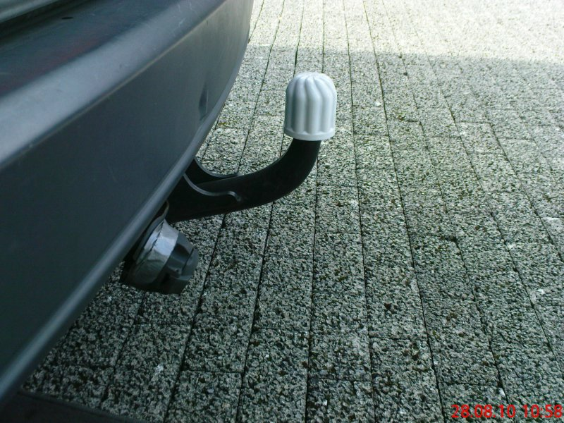

Ulysse 220 | technische Daten
Alle Bilder
Kauf:
Im April 2007 wollten wir ein neues Auto haben. Ich machte eine Übersicht über ca. 100 Vans inklusive Zuverlässigkeit, Fahrleistungen, Preise und Unterhaltskosten. Dann habe ich Autos gestrichen, die:
- man nicht unter 6000€ bekommt
- die zu langsam sind (15 sek bis 100 km/h und 160 km/h Höchstgeschwindigkeit müssen sein)
- die weniger als 7 Sitze haben
- die nur mit mehr als 13 Jahren (15 Jahre bei Mazda und Toyota) zu bekommen sind
- die nur mit mehr als 150 000 km (200 000 km bei Mazda und Toyota) zu bekommen sind
- die einfach nur zu unzuverlässig sind (Quellen: ADAC, TÜV, DEKRA, GT� ...)
- die für die gebotenen Fahrleistungen zu viel Sprit brauchen (Quellen: AutoKataloge, spritmonitor ...)
- die nicht mindestens die gelbe Plakette bekommen
- die ein IMO schlechtes Sitzkonzept haben
Danach blieben nicht viele Autos übrig:
- Toyota Previa 2,4
- Mazda MPV 3,0 V6
- Eurovan 2,0 und 2,0 Turbo
Da der MPV doch relativ viel Sprit braucht und der Toyota (in ordentlichem Zustand) an der oberen Preisgrenze liegt, haben wir uns für einen Eurovan entschieden. Der Turbo bietet zwar sehr gute Fahrleistungen, doch weiß ich nicht, wie der Vorbesitzer damit gefahren ist. Hat dieser den Turbo nicht warm gefahren und nicht nachlaufen lassen, möchte ich das nicht ausbaden. Also fiel die Entscheidung auf den Vernunftsmotor mit 2l Hubraum ohne Turbolader und 121 PS.
Gefunden haben wir dann diesen Fiat Ulysse EL - das ganze sogar nur 20 km von uns entfernt bei einem Citroen-Händler. Baujahr 1996, 142 000 Kilometer, 2,0i Motor mit 121 PS.
Der Fiat war also 11 Jahre alt. Er war aus Erstbesitz und scheckheftgepflegt. Er bekam eine neue Inspektion mit Klimaanlagenservice, neue Reifen, neue Bremsen und neue HU/AU. Ansonsten hat er noch eine Klimaanlage, 1 Glas-Panorama-Dach vorn, 1 Glas-Schiebedach hinten, elektrische Fensterheber vorn und elektrisch verstellbare und einklappbare Außenspiegel. Prinzipiell also gute Voraussetzungen, mit dem Auto lange problemlos zu fahren.
Fiat Ulysse Schlachter
Nicht zuletzt wegen der LPG-Anlage und meiner Absicht, das Ventilspiel gut im Auge zu behalten, kaufte ich einen günstigen zweiten Ulysse. Er sollte als Lern- und Bastelauto herhalten und gleichzeitig ein Ersatzteillager für den grünen Ulysse sein.
Mit Nebelscheinwerfern, Scheinwerferwaschanlage, Alufelgen, einer Alarmanlage, einer Superzentralverriegelung mit IR-Fernbedienung, einer Anhängekupplung mit 1900 kg Anhängelast, getönten Scheiben, einem 6fach CD-Wechsler, Radiosteuerung am Lenkrad, vordere Sitze drehbar, hintere Sitze mit je 2 Armlehnen und 4 elektischen Fensterheber ist er sehr gut ausgestattet.
Dafür hat er keine Klimaanlage, über die unser Alltags-Ulysse verfügt. Die Zylinderkopfdichtung ist defekt und am Auspuffkrümmer fehlen ein paar Schrauben, sodass er einen Höllenlärm macht, wenn der Motor läuft. Damit ist er zwar nicht wirklich fahrfähig, zum Basteln, Lernen und als Ersatzteillager reicht er aber allemal.
LPG-Umbau
Etwas über ein Jahr nach dem Kauf des Autos beschlossen wir, ihn auf Autogas umrüsten zu lassen. Es sollte eine Prins VSI werden. Auf diesem Bild sieht man die Tankanzeige mit Umschalter.
Image einfuegen!
Linkes Bild: Oben links sieht man die 4 Injektoren. Links daneben befindet sich der Filter für die Gasphase. Links unten erkennt man noch den Verdampfer. Links neben dem Luftfilterkasten findet das Steuergerät seinen Platz. Rechtes Bild: am linken Rand (grüner Deckel) sieht man den 400-ml-Vorrat an FlashLube. Rechts oben wieder der Verdampfer mit dem Filter der Flüssigphase. Jetzt darf natürlich auch der Tank nicht fehlen. Der Ulysse hat sein Ersatzrad unten dran. Statt dessen befindet sich dort jetzt ein 58-l-Tank. Netto passen ca. 46 l rein. Der Tankeinfüllstutzen befindet sich im Stoßfänger. Da der Stoßfänger unlackiert ist, fällt der Stutzen kaum auf.
Amortisationsrechnung beim Umbau:
Benzinpreis: 1,47€
Benzinverbrauch: 10,6 l/100 km
Kosten für 100 km: 15,60€
Gaspreis: 0,68€
Gasverbrauch: (ca. 20 % mehr): 12,7 l/100 km
Kosten für 100 km: 8,65€
So gesehen rechnet sich die Gasanlage nach knapp 34 000 km
Es kommen allerdings noch geringe Zusatzkosten hinzu: der TÜV will 30€ für die Gasprüfung haben, ab und zu noch Ventile kontrollieren, ggf. einstellen lassen. Nach 25 000 km und dann alle 75 000 km wird eine Inspektion der Anlage fällig. Die soll so ca. 60€ kosten. Alles in allem wird sich der Umbau also nach 35 000 bis 40 000 km amortisieren.
Probleme:
1. die Ventile sind manuell einzustellen - nur kontrollieren kostet ca. 1h Arbeit, das Einstellen ca. 2 bis 3 Stunden
2. ob die Ventile und die Ventilsitze gehörtet sind oder nicht - da streiten sich noch die Geister. Fakt ist, dass der Motor auf den Problemfahrzeug-Listen der Gasanlagenhersteller nicht draufsteht. Der Motor stammt von PSA und wurde außerdem im Citroen ZX, Xantia und XM verbaut, dazu noch im Peugeot 306, 405 und 605. (Und natuerlich in den mit dem Ulysse baugleichen Citroen Evasion und Peugeot 806.) Im Transporter Peugeot Boxer wurde ein praktisch gleicher Motor verbaut. Dort hat er etwas mehr Drehmoment und dafür weniger Leistung (80 kW/109 PS anstatt 89kW/121 PS). Der Peugeot steht auf den Problemfahrzeug-Listen drauf.
Nachtrag zur Amortisation nach 29 000 km:
Nach momentaner Hochrechnung tritt die Amortisation nach 40 000 km ein. Der Benzinpreis ist nach dem Einbau auf knapp über einen Euro gefallen, dann wieder gestiegen. Lange Zeit lag er um 1,30€ pro Liter, der Liter LPG bei ca. 50 bis 55 Cent. Der LPG-Verbrauch liegt bei 11,8 l/100 km. Aufgrund der häufigen Kurzstrecke liegt der Benzinverbrauch bei ca. 1,8 l/100 km. Die 25-tkm-Inspektion kostete stolze 89€
Nachtrag zu den Ventilen nach 30 000 km:
Beim Messen des Ventilspiels habe ich festgestellt, dass das Spiel nicht weniger wird. Das heißt: alles OK. Das heißt aber noch lange nicht, dass der Motor 100%ig gasfest ist. Im Prinzip heißt das nur, dass mein Umrüster die Anlage gut eingestellt hat und dass ich mit meiner Fahrweise alles richtig mache. Zur Kontrolle des Ventilspiels habe ich übrigens knapp über 2 Stunden gebraucht. Durch die LPG-Anlage ist eine Menge Material vor dem Ventildeckel. Normalerweise sollte die Messung in einer Stunde geschafft sein.
Dass der Peugeot Boxer auf der Liste steht, könnte vielleicht daran liegen, dass er natürlich größer und schwerer ist, und, ganz wichtig, er dürfte meist als Firmenwagen eingesetzt sein, bei dem jeden Tag ein anderer Fahrer fährt, dem das Auto ja auch nicht gehört.
Nachtrag nach 170 000 km auf LPG:
Ich hatte bei jeder Tankung den momentan Benzin-Preis notiert. Dadurch konnte ich die Amortisation recht genau bestimmen. Nach 38 900 km hatte ich soviel gespart, wie ich durch die LPG-Anlage zusätzlich ausgegeben hatte. Darin enthalten ist sowohl die gekaufte FlashLube-Flüssigkeit, als auch die 25 000-km-Inspektion, aber auch die Entfernung des Tanks für den Anbau der Anhängerkupplung - eben alles, was zusätzlich wegen der LPG-Anlage notwendig war. Nach ca. 60 000 km wurde das manuelle FlashLube ausgebaut und gegen elektronisches FlashLube ersetzt, da ich das ständige Am-Rad-drehen leid war. Dieses habe ich jedoch nach 28 000 km wieder rausgeschmissen, da es ständig defekt war. In den 28 000 km habe ich 3 Steuergeräte und 2 Pumpen verschlissen. Seitdem fahre ich mit Prins ValveCare. Bisher seit über 90 000 km problemlos.
Zu den Kosten des Ventilschutzes:
Für die Geräte, den Einbau und die Flüssigkeiten habe ich bisher ca. 650 ausgegeben. Diese Kosten erhöhen den LPG-Preis um 3,3 Cent pro Liter, auf den Kilometer gerechnet macht das 0,39 Cent aus.
Kosten inkl FlashLube und Einbau von allem: 2350€
Radkappen
Auf den Ulysse kommen aus mehreren Gruenden keine Alufelgen drauf:
1. 205/65 R 15 sieht auf Alus ziemlich daneben aus
2. der Ulysse ist alles andere als sportlich - da aendern Alufelgen auch nichts dran, er ist und bleibt relativ langsam
3. will ich in den Ulysse nicht so viel investieren. Als ich ihn kaufte, waren da 2 Fiat-Radkappen drauf und 2 aus dem Baumarkt. Also suchte ich ein paar Citroen-Xantia-SX-Radkappen. Gefunden habe ich welche in der E-Bucht.

Preis inkl. Versand: 21$
Toenungsfolien
Nachdem ich beim YRV die Vorteile der Tönungsfolie erkannt habe, mussten auch in den Fiat Folien rein. Allerdings wollte ich keine 500€ oder so dafür ausgeben, also beschloss ich, die Folie selber zu kleben. Jetzt sind Folien verklebt mit 5 % Lichtdurchlässigkeit - also genau wie beim YRV.
Kosten: 50$
Heckspoiler
An fast allen meinen Autos war bereits eine dritte Bremslampe montiert. Wo das nicht der Fall war, habe ich es selber gemacht. Wegen der Folie auf der Heckscheibe wollte ich im Ulysse aber keine Lampe im Innenbereich. Also suchte ich einen Spoiler mit integrierter Bremslampe.
Ich habe seehr lange gesucht. Zwischendurch wollte ich schon ganze Autos kaufen, um den Spoiler umzubauen. Zu dem Zeitpunkt hatte ich aber leider noch kein Platz für ein zusätzliches (Schlacht)-Auto. Nach ca. 4 Jahren Suche habe ich endlich einen Serien-Spoiler gefunden. Da dieser vorher auf einem weißen Peugeot 806 montiert war und entsprechend weiß lackiert war, habe ich ihn in seeblau umlackiert. Jetzt habe ich endlich eine dritte Bremslampe, die ich persönlich für sehr wichtig halte. Angeschlossen habe ich die Bremslampe des Spoilers an die linke Bremslampe. Für die millimetergenaue Montage des Spoiler sorgen die 2 Kunststoffplättchen, die unter die Befestigungsmuttern montiert werden. Da die Heckklappe aus Glasfaser ist, ist auch das Bohren kein Problem - Akkuschrauber frei.


Kosten inkl. Lackierung: 100$
Raeder
Eigentlich wollte ich auf dem Ulysse keine Alufelgen montieren. Als aber meine Sommerreifen recht weit abgefahren waren, sah ich durch Zufall ein paar 17"-Felgen inkl. Reifen. Der Preis war gut, also habe ich kurzfristig umdisponiert und anstatt neuer 15"-Sommerreifen kamen gleich ein paar 17"-Raeder ans Auto.
Die Reifendimension ist 235/40 R 7
Sportlich ist er damit zwar auch nicht, aber die Raeder haben 2 entscheidende Vorteile:
1. der Bremsweg verkuerzt sich um schaetzungsweise 3 bis 5 m - da der Ulysse eh nicht die besten Bremsen hat, ist das dringend notwendig. Sobald die originalen Bremsscheiben hinueber sind, werde ich gelochte Zimmermann-Scheiben fuer noch kuerzeren Bremsweg anbauen.
2. die moegliche Kurvengeschwindigkeit ist hoeher als mit den 205/65 R 15. Und schliesslich senkt eine hohe Kurvengeschwindigkeit den Spritverbrauch, da man ja nach der Kurve nicht wieder beschleunigen muss. :)
Kosten: 350$ Aufpreis ggue. neuen 15-Zoll-Reifen, die ich sowieso gebraucht haette.
Bremsen
Bessere Bremsen als die Serienbremsen zu finden, dürfte im Allgemeinen nicht sehr schwer sein. Diese tun zwar auch ihre Arbeit, bremst man jedoch aus hoeheren Geschwindigkeiten stark ab, beginnt das Lenkrad zu vibrieren und es droehnt fuerchterlich im Innenraum. Dazu kommt bei insbesondere bei starken Gefaellen noch Bremsfading.
Also wechselte ich die Marke der Bremsen und habe Scheiben von Zimmermann und Bremsbelaege von EBC verbaut. Die Scheiben sind gelocht, sodass Wasser durch die Loecher schneller von der Bremsscheibe runter kann und damit die Bremsen bei Naesse zeitiger ansprechen.
Belaege waehlte ich EBC GreenStuff. Zum einen, weil die gute Bremswerte versprechen, zum anderen, weil die GreenStuff eine Straßenzulassung haben.
Um die Kosten im Rahmen zu halten, wartete ich mit dem Umbau bis die Bremsen sowieso erneuert werden mussten.
Beim nächsten TUEV-Termin (1,5 Jahre später) schaute sich der Pruefer die Bremsleitungen genau an. Und tatsächlich fand er ein paar Stellen, die poroes waren. Da ich schon länger Stahlflex-Bremsleitungen im Visier hatte, wurden die jetzt endlich bestellt und verbaut.
Die Bremswirkung ist damit nicht unbedingt besser, jedoch laesst sich die Bremse besser dosieren.
Nebelscheinwerfer
In meinen Augen ja eigentlich das sinnloseste Zubehoer, das es an einem Auto gibt. Der Ulysse allerdings sieht mit Nebelscheinwerfern einfach besser aus. Mein blauer Bastel-Ulysse war recht gut ausgestattet - so hatte er auch diese zuaetzlichen Lampen. Als ich eines Tages sowieso die Stossstange abmontiert hatte, habe ich gleich die Nebelscheinwerfer umgebaut. Zu meiner Ueberraschung waren die entsprechenden Kabel schon verbaut und ich brauchte sie nur noch anschliessen.
Dazu noch den Schalter einstecken und anklemmen. Fertig. Naja, fast. Die Nebelscheinwerfer funktionieren dann naemlich noch nicht. Wichtig ist noch das Relais fuer die Nebelscheinwerfer. Dieses muss in den Sicherungskasten im Motorraum. Der Kasten ist (in Fahrtrichtung) links hinten. Im Kasten selber muss das Relais in die hintere Reihe an die zweite Stelle von links (links wieder in Fahrtrichtung). Dass es keine Missverstaendnisse gibt: steht man vor dem Motorraum und schaut hinein, ist der Sicherungskasten rechts hinten, das Relais muss man in der hinteren Reihe an die zweite Stelle von rechts hinein.
Tempomat
Nachdem ich beim YRV knapp zwei Jahre bis zum Tempomat-Einbau gewartet habe, habe ich mich beim Fiat schneller durchgerungen. Da der Fiat aber ein Schaltgetriebe hat, ist es etwas komplizierter.
Dieser Tempomat ist noch immer ein MS-400, der als Bedienelement einen Hebel hat, aehnlich wie man das von serienmaessigen Tempomaten kennt.
Der Tempomat funktioniert mit Unterdruck und wird elektronisch gesteuert. Er verfuegt aber einen eigenen Bowdenzug, der an den originalen Bowdenzug angeschlossen wird. So sieht es von innen aus:
Der Anschluss ist eigentlich einfach.
1. Man suche eine Stelle im Motorraum, an der genug Platz für die Pumpe ist und von der aus der Bowdenzug gut und ohne Knicke verlegt werden kann.
2. Dann sucht man eine Stelle im Innenraum für das Steuergerät.
3. Das Geschwindigkeitssignal kann man aus dem Fahrzeug-Kabelbaum holen. Bei elektronischen Tachometern liegt das Geschwindigkeitssignal dort an.
4. Als Überdrehschutz habe ich das Drehzahlsignal von der Rückseite des Tachos verwendet. Um die richtigen Stecker zu ermitteln, misst man mit einem Multimeter die Spannungen an den einzelnen Leitungen. Beim Gasgeben im Stand ändert sich die Spannung des Drehzahsignals. Die Spannung des Geschwindigkeitssignals ändert sich natürlich nur während der Fahrt.
5. Die Leitungen für das Bremspedal kann man einfach an die vorhandenen Leitungen des Bremspedal-Schalters anschließen (z.B. mit einem Abzweigverbinder).
6. Für die Unterdruckversorgung schneidet man eine Unterdruckleitung des Fahrzeuges durch, setzt eines der mitgelieferten T-Stücke zwischen, und verbindet das offene Ende des T mit dem Tempomaten
7. Für den Anschluss den neuen Bowdenzuges muss man schauen, wie sich das im eigenen Auto anbietet. Es gibt mehrere Möglichkeiten; meine ist auf den Bildern zu sehen. Letztendlich kommt es nur darauf an, dass beim Gas geben kein Knick in den neuen Bowdenzug kommen, und dass man überhaupt noch Vollgas geben kann (nicht, dass man den Würfel mit in den alten Bowdenzug ziehen müsste :) )
8. Ein elektronisches Gaspedal wäre kein Problem. Hier muss man den Bowdenzug in den Innenraum zum Gaspedal legen - was bei einem modernen und sehr verbauten Auto allerdings ein Problem ist.
Das Steuergeraet habe ich hinter der Abdeckung der Mittelkonsole versteckt. Die Anschluesse sind die gleichen wie im YRV, nur dass noch ein Drehzahlsignal dazukommt, weil der Tempomat bei Treten der Kupplung ja ausgehen muss. Das ist natuerlich beim YRV durch die Automatik nicht nötig gewesen.
Den Bowdenzug des Tempomaten habe ich auf die gleiche Weise wie im YRV befestigt. Die Vakuum-Servo-Pumpe habe ich im Motorraum in Fahrtrichtung rechts direkt auf dem Radhaus befestigt. Gegenüber dem Befestigungspunkt beim YRV hoert man die Ventile der Pumpe so nicht im Innenraum. Auch im Fiat ist der Geschwindigkeitsbereich groesser, als von Waeco angegeben. Anstatt erst bei 45 km/h zu beginnen, kann ich ab ca. 30 km/h mit Tempomat fahren. Nach oben hin ist bei knapp 180 km/h Schluss - schneller ist allerdings das Auto auch nicht.
Kosten: Tempomat hatte ich noch aus dem YRV; dazu 10 Stunden Einbau
Anhaengerkupplung
Ebenfalls vom blauen Ulysse habe ich die Anhängerkupplung übernommen.
Mechanik:
Den Einbau der Kupplung habe ich selbst gemacht. Beim Ulysse braucht nichts gebohrt zu werden, da die entsprechenden Löcher schon drin sind und lediglich mit Klebepads abgedeckt sind. Wichtig für den Einbau sind allerdings die Käfigmuttern, die man in den Fahrzeugrahmen steckt und mit denen man die Kupplung schließlich am Rahmen befestigt. Im nicht sichtbaren Bereich muss der hintere Stoßfänger etwas ausgeschnitten werden. Das geht aber mit einem Messer ganz gut. Vor der Arbeit sollte man das Ersatzrad abnehmen. Das kostet ja eigentlich nichts und dauert nur wenige Augenblicke. Dummerweise habe ich kein Ersatzrad mehr, sondern einen Gastank für das LPG. Da ich an die LPG-Anlage nicht selber rangehen moechte, habe ich den Tank abnehmen lassen und nach dem Anbau wieder anbauen lassen. Leider passte er nicht mehr an genau die selbe Stelle und musste etwas versetzt angebaut werden. Wenn es sich irgendwie ergibt, sollte man also zuerst die Anhaengerkupplung montieren und erst danach das Auto auf LPG umrüsten.
Elektrik:
Nach dem mechanischen Teil kam der elektrische Teil der Kupplung dran. Der war dann noch einfacher als ich erst dachte. Von der 13poligen Steckdose geht ein vieladriges Kabel weg. Dieses endet beim linken Rücklicht und braucht dort nur zwischengesteckt werden. Fertig. Um an diese Steckverbindung zu gelangen, muss man im linken Staufach etwas kramen - dann findet man das schon. Zum Testen musste mangels Anhänger ein Fahrradgepackträger eines Nachbarn herhalten. Trotzdem ich die Leitungen an exakt die gleichen Stellen wieder angeschlossen hatte wie das zuvor beim blauen Ulysse war, hatte ich Dauerplus auf der Nebelschlussleuchte. Also noch kurz umklemmen und fertig.
Übrigens passt als Schutz für den Kugelkopf ein Deckel einer Sprüh-Sahne-Dose.
TÜV:
Die Kupplung selber darf mit 2000 kg belastet werden. Leider stand in den Papieren von unserem Ulysse nur eine zulässige Anhängelast von 1300 kg drin. Beim blauen war aber ein Zusatzeintrag im Fahrzeugschein, dass er bis 10 % Steigung auch 1600 kg, bis 8 % Steigung sogar bis 1900 kg ziehen darf. Ich war also beim TÜV wegen der Erhoehung meiner 1300 kg. Er schaute in der Allgemeinen Betriebserlaubnis des Autos nach und fand darin genau die Zahlen, die auch im Schein des blauen standen. Und genau diese 1600 kg bzw. 1900 kg konnte er mir aufgrund der ABE auch in den gruenen Ulysse eintragen. Die ABE hat übrigens die Nummer G785. Diese Abnahme und Zuglasterhoehung hat inkl. einer neuen Zulassungsbescheinigung Teil 1 ca. 50€ gekostet. Dafür, dass ich die Kupplung an sich im Prinzip kostenlos bekommen habe, ist das sicher zu verschmerzen.
Kosten: ca. 170$ für Ab-/ Anbau des Tanks und 50$ beim TÜV/Straßenverkehrsamt
